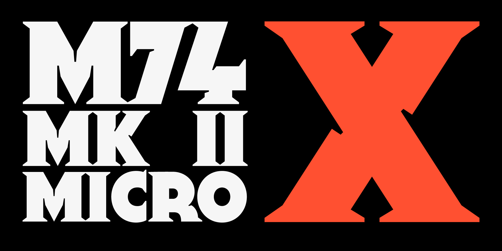

A retro typeface inspired by science fiction paperback covers (2017)
M74 was arguably the first typeface I made, certainly the first one I completed. While the design itself is flawed, the research and ideas behind it were subsequently reimagined as MD Nichrome.

Example · A later iteration of the typeface, featuring ink traps and larger serifs.